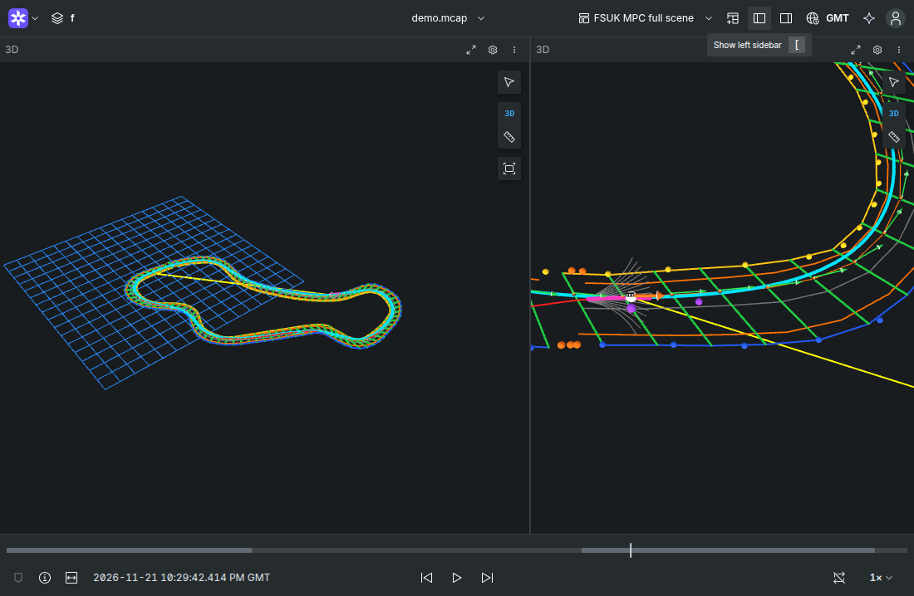

real FSUK geometry
MPC
SPRINT
WASD · third-person chase
CONES HIT0round 1
0m/sMPC
FULL-SCENE FOXGLOVE LAYOUT
The same scene, in Foxglove
Two 3D panels open from the recorded demo.mcap:
- Track overview — FSUK geometry, blue/yellow cones, gates, race line, soft corridor, LeastAction vectors and the car history trail.
- Car chase — the fixed frame is
car, so the whole world moves around the car. Every MPC tentacle is grey, the selected one is magenta, and the hard/soft constraints stay visible.
The panel topics were saved as hidden in the old layout. They are now bound explicitly; the layout file is in the repo as foxglove_layout.json.
THE COST FUNCTION CHANGES WITH THE WEIGHTS
What the car is minimising
Tentacle cost
$$
J=w_{track}\sum e^2+w_{head}\sum e_\psi^2
+w_{speed}\sum(v-v^*)^2
+w_{comfort}\left(\delta^2+\tfrac12(\delta-\delta_{prev})^2\right)
+w_{soft}\sum\mathrm{soft}^2
$$
Each candidate arc is propagated through the bicycle model. The lowest J wins.
Soft corridor
$$
\mathrm{soft}=\max(0,|e|-0.72w)
$$
72 % of the corridor is free; beyond it the cost grows quadratically. The hard limit rejects an arc.
Kinematic bicycle
$$
\dot x=v\cos\psi,\quad \dot y=v\sin\psi,\quad
\dot\psi=\frac vL\tan\delta
$$
Same model in the predictor and the car simulation.
Actuator
$$
rpm_{target}=\min\left(4000,\frac{60v_{cmd}}{2\pi r_w}\right),\quad
\tau=\frac{m r_w|a+0.5|}{2}
$$
Speed mode, torque and mechanical brake follow core-sim2.
Selected arc cost0.000
tracking · heading · comfort · soft
THREE CONTROLLERS · THREE QUESTIONS
Comparison, without pretending it is a leaderboard
PID / MPC
0.025 / 0.317 mmax CTE on real FSUK sprint; 98/98 gates, loop yes.
F1 imitation
5.61 % throttleheld-out Silverstone laps; steering 0.0096 rad, brake 5.65 %.
FlyWire
1.79 m max CTEKenyon/CX surrogate on FSUK; RMS 0.86 m, lap yes.
F1 is a different track and predicts commands, not a closed-loop planner. FlyWire is a subset-scale surrogate, not a 140k-neuron simulation. PID/MPC are closed-loop on the same geometry.